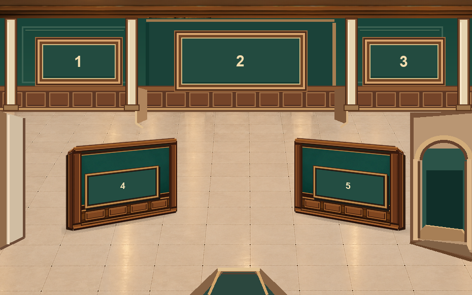
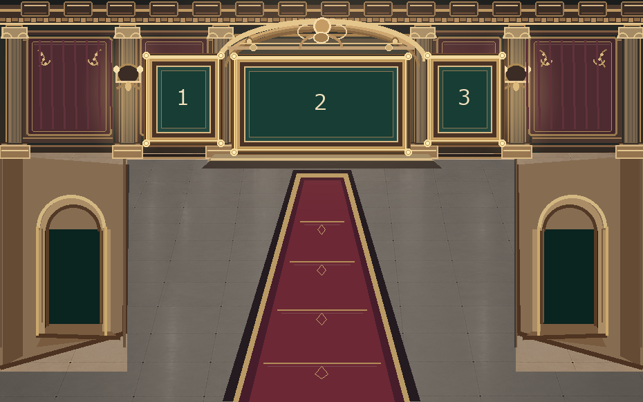
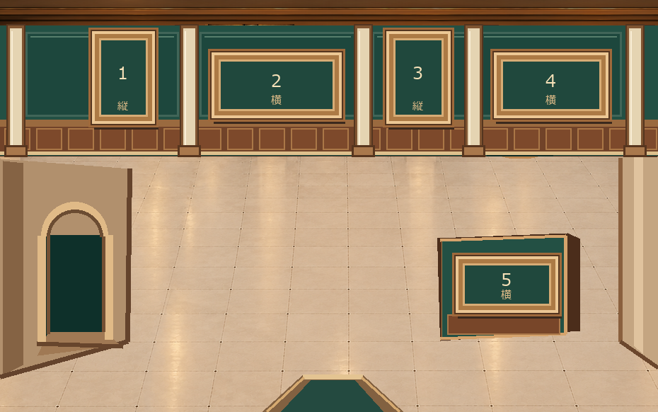
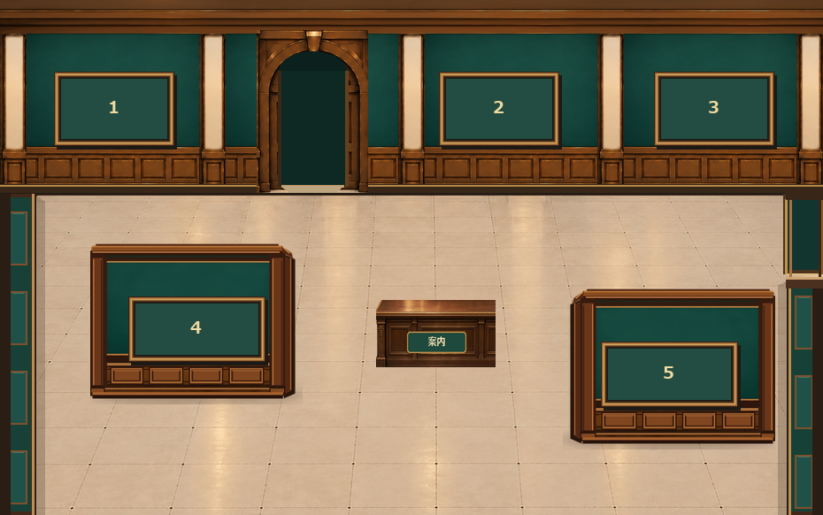
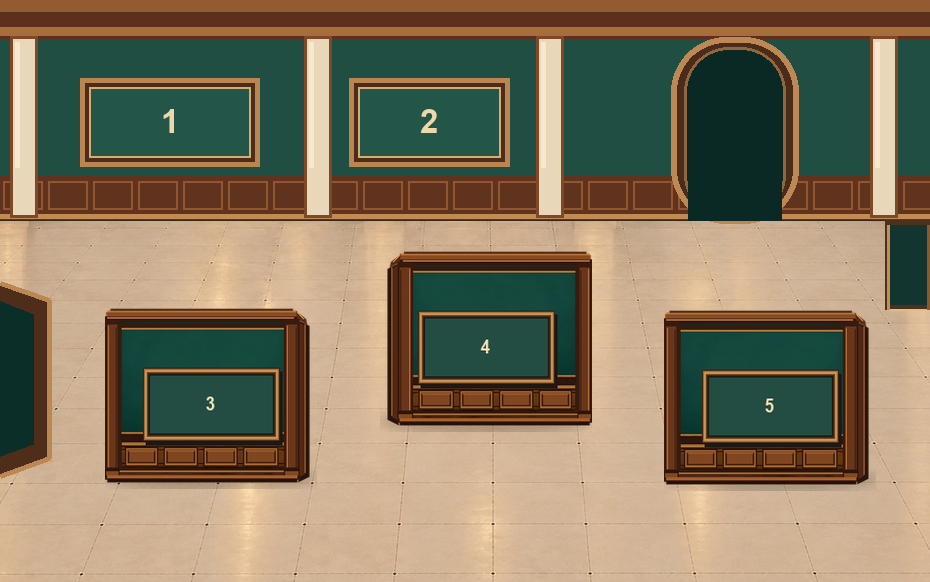

展示室3
Lv.4・G案｜5枠

奥まった中央壁と、左右の斜め展示壁が特徴。
監修用の承認済み構図を、正しい館内の接続関係に沿って並べました。スマホでは上から順に表示します。写真をタップすると拡大できます。

奥まった中央壁と、左右の斜め展示壁が特徴。

最後の特別室。豪華さはE案で固定。ゲームの5→3枠変更は後日対応。

奥壁4枠＋室内1枠。縦横混在の外形を採用し、装飾候補は保留。

奥壁3枠＋手前2枠。中央には小さな案内台。

Lv.6の承認画像をそのまま掲載。撮影時のLv.1操作UIが写っています。

奥壁2枠＋手前に3枠。中央をずらしたレイアウト。